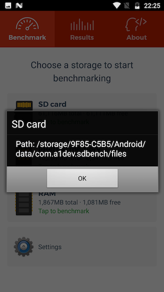
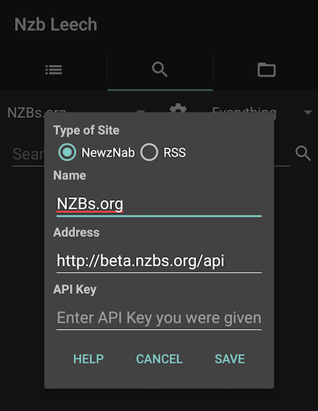

Nzb Leech allows you to download files from usenet while you're on the go. Read on to get the most out of Nzb Leech!
Other than using Nzb leech to download nzb files, you can use a browser as well. Note that some browsers fail to properly download nzb files, so Chrome is recommended.
To switch between Wi-Fi and Data, pause your download, wait for your connections to disconnect, turn on/off Wi-Fi, then resume your download. Sometimes you won't be able to connect right away as the server may prevent you from connecting via multiple ips (Carrier ip address and your home ISP ip address)
Servers You can add multiple servers. If you just have one server set it as the Primary server. A common setup is to have a Primary and backup server. The backup server is only used if a file cannot be found on the first server (this is used to minimize missing file parts).
Advanced - Article Cache This setting is useful to speed up downloading by minimize disk reads/writes by storing incomplete files in memory. Android is strict, and doesn't let one app take all the device's memory, its usually around 256MB for devices with 3GB of memory. So this 256MB must be shared between the article cache and general memory needed for Nzb leech to run. Don't allocate more than half for your device. So if your device allows 256MB per app (I display this device specific value in the Setting), set article cache to 128MB. If you set it too high, Nzb leech will run out of memory and crash.
The article cache is exhausted more likely on nzbs that have large files, so you may not run out of memory on nzbs with smaller size files.. Keep that in mind when you are experiencing issues!
For example, if you are downloading files 10MB each, the article cache never fills up because as each file is downloaded, the cache for that file is removed. But if you download a file that is very large, Nzb leech will try to store the entire file in memory and crash.
Its possible to download to your external SD Card but you have to do some work to figure out the specific directory as Android restricts writing to the sd card (for most devices). The only exception is an App can write to its own designated folder, so this is the folder we need to determine. You can use one of the two apps to determine the path. There are two things you should know about using this app specific path:
A1 SD Bench This is the easier approach, at the time of this writing, you just install the app and press and hold on the SD Card to bring up a menu, select "Show media path". The path in the screenshot shows the A1 SD Bench path, you need to replace com.a1dev.sdbench with sic.nzb.app, so the complete path in this case would be /storage/9F85-C5B5/Android/data/sic.nzb.app/files. Now you have the complete path, so go ahead and use it in Nzb Leech.
Tip: Browse this path in Nzb Leech File tab to see if you recognize any files to confirm its your sd card.
Termux Another way to determine the directory is by installing Termux. Open the app and type df to list all the paths on your device. The sd card path will usually start with "/mnt" or "/storage". In the screenshot below the path is /storage/39463835-2d43-3542-3500-020000000000. I append the Nzb Leech specific directory and I get /storage/39463835-2d43-3542-3500-
020000000000/Android/
data/sic.nzb.app/files. Now you have the complete path, so go ahead and use it in Nzb Leech.
There are a few sites that are not editable but the rest can be edited by clicking the Gear icon next to the site. If the Gear icon is missing, the site cannot be edited.
Make sure NewzNab radio button is selected and enter the API url and API Key. The API address depends on the site, but its common to have "api" appended like so: https://example.com/api Check with the site if you have trouble. 429 Too Many Requests or similar message means your site is restricting your api usage (either limit amount of requests per day or you must be site VIP member to use).
NewzNab sites are more compatible, but some rss sites work ok too. To make a RSS site searchable, use %s in your address as the value for the query parameter. e.g.,
http://www.nzbindex.nl/rss/?q=%s&sort=agedescNzbKing can be added as well using their rss feature, the url will look something like this
https://www.nzbking.com/rss/?q=%s&key=YOUR_API_KEY
Nzb leech says trial expired but I already made a donation. This is an ongoing issue, follow the steps below to fix:
Fix A (only works if the account used to make the purchase is the "primary" account on the device):